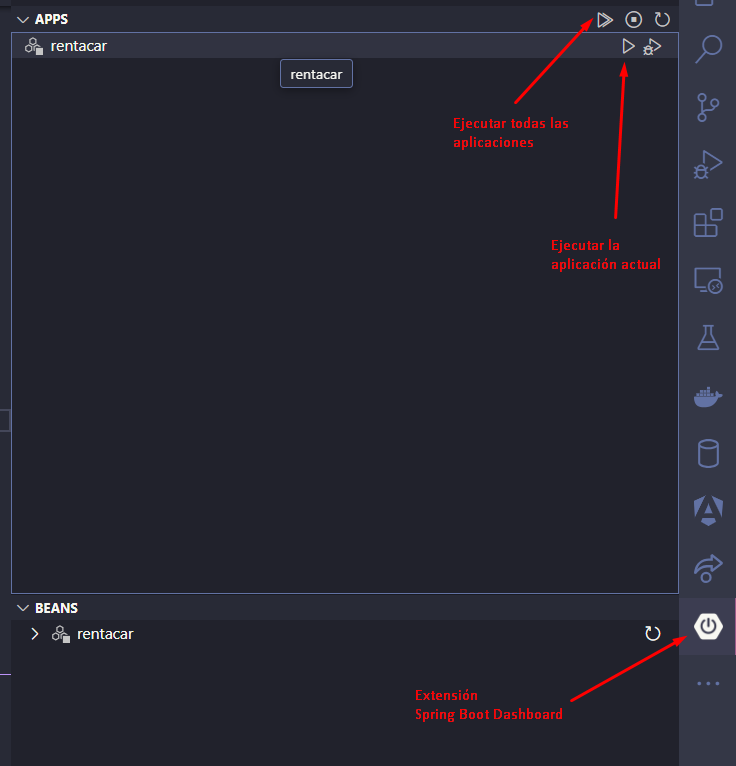
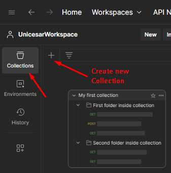
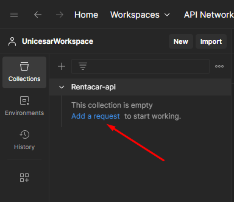
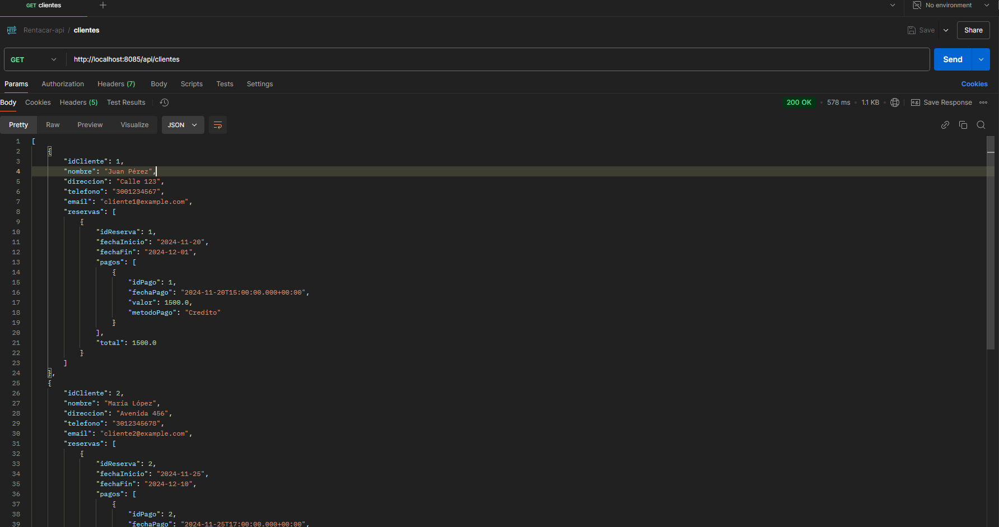
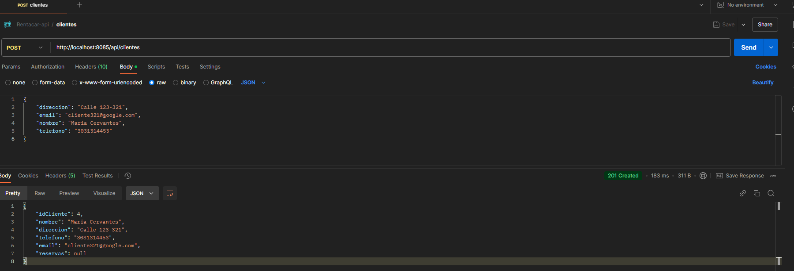
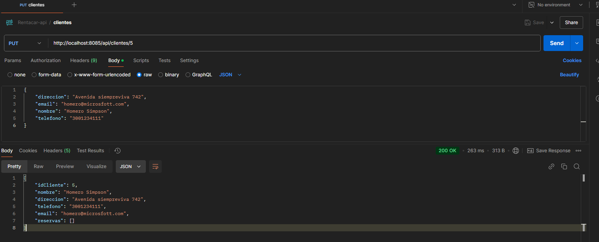

Desarrollo del Backend API (I)
Creando los controladores
En esta parte creamos los controladores que utilizaran los servicios. Los controladores son etiquetados con @RestController, que indica que la clase manejará peticiones de tipo REST.
Este es un ejemplo del controlador de cliente:
package com.example.rentacar.controller;
import org.springframework.web.bind.annotation.RequestMapping;
import org.springframework.web.bind.annotation.RestController;
import com.example.rentacar.entity.Cliente;
import com.example.rentacar.service.IClienteServicio;
import java.util.Optional;
import org.springframework.beans.factory.annotation.Autowired;
import org.springframework.http.HttpStatus;
import org.springframework.http.ResponseEntity;
import org.springframework.web.bind.annotation.GetMapping;
import org.springframework.web.bind.annotation.PathVariable;
import org.springframework.web.bind.annotation.PostMapping;
import org.springframework.web.bind.annotation.RequestBody;
import org.springframework.web.bind.annotation.PutMapping;
@RestController
@RequestMapping("/api/clientes")
public class ClienteControlador {
@Autowired
private IClienteServicio clienteServicio;
@GetMapping("/{id}")
public ResponseEntity<Cliente> getClientePorId(@PathVariable Integer id) {
Optional<Cliente> opCliente = clienteServicio.obtenerClientePorId(id);
if (opCliente.isPresent()) {
return ResponseEntity.ok().body(opCliente.get());
}
return ResponseEntity.notFound().build();
}
@PostMapping
public ResponseEntity<Cliente> crearCliente(@RequestBody Cliente entity) {
Cliente nuevoCliente = clienteServicio.crearCliente(entity);
return ResponseEntity.status(HttpStatus.CREATED).body(nuevoCliente);
}
@PutMapping("/{id}")
public ResponseEntity<Cliente> actualizarCliente(@PathVariable Integer id, @RequestBody Cliente clienteOld) {
Optional<Cliente> cliente = clienteServicio.obtenerClientePorId(id);
if (cliente.isPresent()) {
Cliente clienteNew = cliente.get();
clienteNew.setDireccion(clienteOld.getDireccion());
clienteNew.setEmail(clienteOld.getEmail());
clienteNew.setNombre(clienteOld.getNombre());
clienteNew.setTelefono(clienteOld.getTelefono());
return ResponseEntity.ok(clienteServicio.crearCliente(clienteNew));
}
return ResponseEntity.notFound().build();
}
}
Configurar la conexión a la base de datos
Para conectarnos a la base de datos desde el backend, agregamos los siguientes datos al archivo de configuración de la aplicación, application.properties:
#URL de conexión a la base de datos
spring.datasource.url=jdbc:mysql://localhost:3307/rentacardb
#Tipo de controlador de la BD
spring.datasource.driverClassName=com.mysql.cj.jdbc.Driver
spring.jpa.properties.hibernate.dialect=org.hibernate.dialect.MySQLDialect
#Muestra en consola las consultas sql generadas
spring.jpa.show-sql=true
spring.datasource.username=root
spring.datasource.password=root
Ejecutando la aplicación
Para ejecutar la aplicación tenemos varias opciones, la primera es ejecutar el wrapper de gradle, en la terminal, con el siguiente comando:
gradlew.bat bootRun
La otra opción es usar la extension Spring Boot Dashboard desde el ícono Run de la aplicación, como se ve en la imagen:

Probando el Backend con Postman
Postman, es una popular herramienta para desarrollo, pruebas y documentación de todo tipo de APIs, especialmente REST. Permite hacer todo el proceso de pruebas, incluso de automatización de estas, para ahorrar tiempo y tener una mejor cobertura.
Acá vemos algunos enlaces para conocer y manejar muy bien esta herramienta:
- Tutorial definitivo de Postman: https://www.youtube.com/watch?v=qsejysrhJiU
- Postman tutorial: https://apidog.com/blog/how-to-use-postman-for-api-testing/
Empezamos creando un espacio de trabajo en postman (File -> New -> Workspace) Luego creamos una collection:
En el ícono Collections, le damos clic al botón Create new collections, como vemos en la imagen: 
Luego seleccionamos la opción Blank collection y le damos un nombre
Y estamos listos para agregar peticiones. Hacemos clic en Add new request, para agergar la primera: 
En la pestaña de la nueva petición, dejamos el método GET y en la URL se pone el endpoint que dirige a ese método en la api: http://localhost:8085/api/clientes
Y estamos listos para agregar peticiones. Hacemos clic en Add new request, para agergar la primera: 
Ahora vamos a probar una petición POST (crear un cliente) 
Ahora vamos a probar una petición PUT (actualizar el cliente) 
Ahora vamos a probar una petición DELETE (eliminar un cliente)